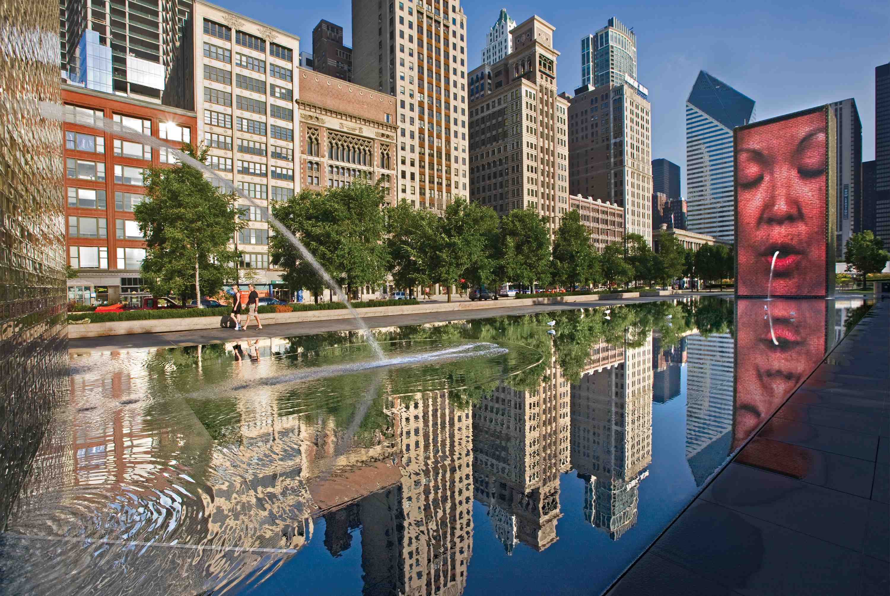
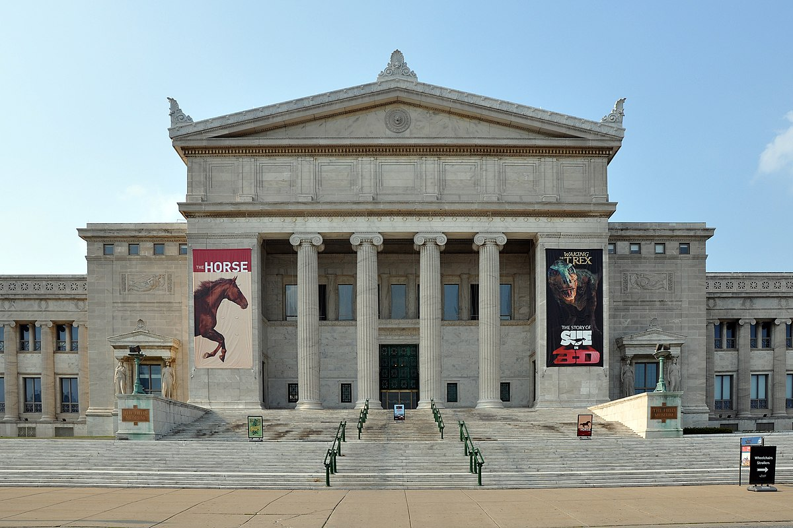

The function of this website is to show you around some of the coolest spots in my favorite city, Chicago. Let's
move on
to the fun part!
Millennium Park
Not exactly a deep cut, this is Chicago's second-most popular tourist attraction behind Navy
Pier -- and for
good reason. Standing on a 24.5 acre plot of land in northwestern Grant Park, Millennium Park offers a
wide
variety of attractions. A pair of massive, LED-covered obelisks form a fountain simulating the spit of
giant
faces from the LED screens. The BP Pedestrian Bridge gives park-goers a little exercise with
breathtaking
views of the architecture of Chicago, and live music rings out throughout the summers. Millennium Park
is typically open from 6:00 AM to 11:00 PM 7 days a week.

Crown Fountain in Millennium Park
Soldier Field
Soldier field, originally built in 1924, has been the home of Chicago's NFL team the Bears since 1971. It
underwent expensive renovation in 2003, but plenty of history still remains. Despite a rocky couple of
decades, Bears games are certainly a spectacle worth attending. A number of Chicago Bears names worth watching in the
2021 season are as follows:
Kyle Fuller
Roquan Smith
David Montgomery
Darnell Mooney
Jaylon Johnson
Art Institute of Chicago
The Art Institute of Chicago, founded as the Chicago Academy of Fine Arts in 1879, holds loads of history within its walls.
Its permanent collection has grown to over 300,000 works of art, leading to its worldwide recognition as an institution.
The institute added its "Modern Wing" in 2009, its largest expansion to date. Its hours are listed below.
Monday
Tuesday
Wednesday
Thursday
Friday
Saturday
Sunday
10:30-5:00
10:30-5:00
10:30-8:00
10:30-8:00
10:30-8:00
10:30-5:00
10:30-5:00
Field Museum of Natural History

The Field Museum of Natural History is one of the largest such museums in the entire world. The museum ranges from
ancient Egyptian artifacts to the entire fossilized skeletons of dinosaurs. This museum is a great attraction for kids
and adults alike. In my opinion, this museum paired with the Art Institute of Chicago makes for an incredible day that you
can write off as educational. Directions to the Field Museum have been embedded below.